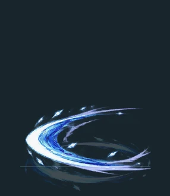
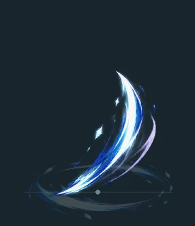
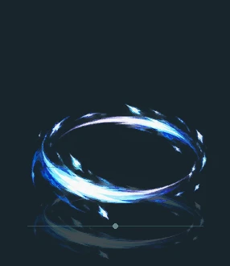
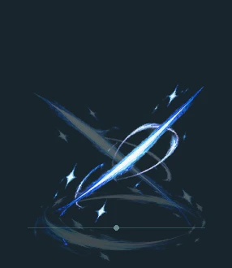
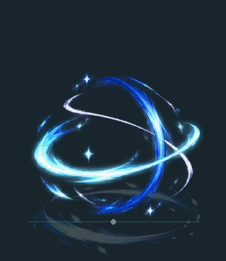
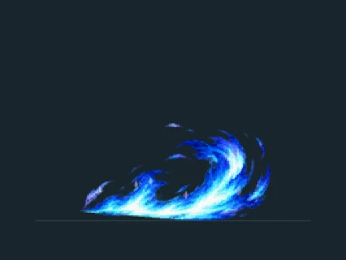
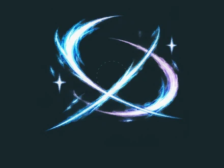
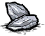
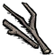
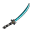

03 / SIGNATURE WEAPON武器
握持与命中
- 持有时移速增加15%，星见雅装备时攻击速度提升30%。
- 每次命中施加 0.5 冰冻值。
- 目标缺少冰冻能力、处于免冻状态或具有无限冰抗时，改为增加 10 普通物伤，仍经过防御。
- 普攻刀光随连续命中依次呈现：横斩 → 上挑 → 环斩 → 交错连斩 → 收尾环刃，第五段后循环。多道刀光仅为视觉效果，不增加单次伤害或冰冻次数。
五段刀光预览
编译纹理离线合成 · 半速循环展示，实际遮挡与地面透视以游戏为准。

01 横斩
02 上挑
03 环斩
04 交错连斩
05 收尾环刃同一目标连续有效命中才累积段数；换目标、挥空、受伤、冲刺、卸装或死亡会重置。停顿超过当前攻击间隔的 2.5 倍（最少 0.8 秒）也会重置。刀光按方向与目标体型调整，时长随攻速缩短。
鼠标右键特殊技：飞雪
装备妖刀后瞄准有效地形发动，基础伤害 ×2（30；免冻目标 40），升级位面伤害 ×2（40）。冷却 3 秒，实际冲刺期间无敌。
默认无前摇，可选 15 帧（0.5 秒）或 30 帧（1 秒）。旧世界保存的前摇选择仍生效，可手动修改。冲刺两侧呈现分段青蓝火浪与碎星；有效命中播放蓝白交错刀光。配有专属冲刺音效，随动作阶段衔接，中断时停止。
飞雪特效预览
当前编译纹理离线合成 · 半速循环；实际距离、地面透视和遮挡以游戏为准。

01 青蓝火浪
02 命中交错刀光制作配方
燧石 ×4+ 金块 ×2+
金块 ×2+
树枝 ×2科学机器 · 星见雅专属 · 人物 / 武器分类
04 / AWAKENING修复与升级
妖刀升级
 组件 ×20
组件 ×20 能源 ×20→
能源 ×20→
金块修复
给予 1 个金块修复 50 次耐久，上限 200 次。满耐久时拒收。耐久耗尽后妖刀不会消失，而是破损并自动卸下；金块修复后可重新装备。
双材料升级
消耗 20 个特化型异常组件 + 20 个音擎能源模块，获得无限耐久和 20 基础位面伤害，切换青蓝刀身与图标。
01先装备，再打开升级窗口物品栏右键未装备的完好妖刀可快速装备；装备后右键武器格打开升级窗口。破损妖刀可在物品栏右键升级，地上的妖刀也可升级。
02上组件，下能源上格放特化型异常组件，下格放音擎能源模块，各至少 20 个。
03关闭窗口完成升级材料齐全后关闭窗口消耗并升级，余料退回；不足时材料保留，随武器存档，破损时保留；升级成功也会恢复破损妖刀。
升级后保留闪电标记，右键武器格可卸下；对地右键仍施放飞雪。
旧存档升级+
不再接受约束静电升级；旧存档已升级的妖刀保持升级状态。
✦ 手持妖刀并在身体槽装备霰落星殿时，刀根出现卷曲青蓝幽火，刀身增加淡蓝流光；装备背包还会使星见雅三套衣装的发梢泛起蓝色辉光。
05 / EQUIPMENT容器 · 身体
出生自带的身体装备，可放入物品栏，不显示背部外观。
| 等级 | 容量 | 升至本级所需材料 | 星见雅暴击加成 |
|---|
| Ⅰ · 初始 | 8 格 | 出生获得 | +8% |
| Ⅱ · 进阶 | 12 格 | 组件 ×20 + 能源 ×20 | +16% |
| Ⅲ · 满级 | 14 格 | 组件 ×40 + 能源 ×40 | +24% |
对背包本体或物品图标使用“升级”，两种材料可分批给予，多余部分退回。满级共需各 60 个；地面、物品栏和穿戴时均可升级。
把材料放入背包只会收纳；不再接受金块升级。每次给予会显示当前等级和进度。
装备联动
穿戴时发梢泛蓝；同时手持妖刀时，刀根出现幽火、刀身出现流光。效果不增加伤害或照明。
卸下背包、死亡或变为灵魂时清理外观，读档和复活后按装备恢复。护盾冷却属于角色，换包不刷新。背包与晓·围巾占用同一身体槽，不能同时装备。
旧存档升级进度如何保留？+
原有等级保留。旧金块未完成进度每 5 个折算两种材料各 1 个，余数向上取整，但至少仍需两种材料各 1 个才能升级；迁移只执行一次。已有新材料进度与物品正常保存。
06 / EQUIPMENT穿戴 · 头部
任意佩戴者的普通与特殊 / 位面输出均获得 ×1.1 增幅，仍经过目标防御。无耐久，始终不增加额外装备外观。
穿戴时周身出现淡黄四角星，并持续照明，照明范围为启迪之冠的 1.5 倍。卸下或死亡后清理星光与照明，物品栏及落地状态不发光。
制作配方金块 ×8+石头 ×8科学机器 · 星见雅专属制作
07 / DAWN ACCESSORIES穿戴 · 头部
头部装备，无耐久。春夏隔热 240，秋冬保暖 120，随季节切换；开启隐藏装备贴图时仍显示。
星见雅佩戴时保留狐耳；与发卡占用同一头部槽。
每件制作配方蛛丝 ×4+绳子 ×1科学机器 · 星见雅专属制作 · 人物 / 服饰分类
08 / DAWN ACCESSORIES穿戴 · 身体
身体装备，无耐久，全年保暖 120；秋冬与帽子叠加可达 240。隐藏装备贴图时仍显示。
围巾与霰落星殿占用同一身体槽。
✦ 换上围巾会卸下背包，因此背包提供的暴击率、霜染寒星护盾与妖刀装备联动幽火也会随之停止。
每件制作配方蛛丝 ×4+绳子 ×1科学机器 · 星见雅专属制作 · 人物 / 服饰分类
09 / EQUIPMENT容器
晓·挎包
miyabi_dawn_bag随身收纳的四格挎包。
物品栏右键开关，无需穿戴；移动或丢下时窗口关闭，物品保留。
挎包不能装入其他容器、背包或捆扎包；挎包本身可放入普通箱子。
制作配方绳子 ×4+树枝 ×4+牛毛 ×4+金块 ×4科学机器 · 星见雅专属 · 人物 / 容器分类
11 / WARDROBE外观
衣装与灵魂
默认衣装、银庭花信与「晓」均随模组提供，共享角色能力、出生物品与专属灵魂。
衣柜简笔画
默认衣装
深色衣装与长发，保留标志性的发卡、袖饰和高跟鞋。
专属灵魂
三套衣装共用，复活后恢复所选衣装。角色资料页会随当前衣装切换肖像。
12 / CONFIGURATION配置
配置与版本
模组配置
默认隐藏普通头部与身体装备贴图，晓·渔夫帽、晓·围巾及手持工具仍显示，装备属性保留；飞雪默认无前摇，可在模组配置选择 15 或 30 帧；专属跑步动作默认关闭，可在模组配置中开启。
有哪些内容已实现？+
角色与三套衣装、专属灵魂、武痴狐狸特质、小无尾伙伴、妖刀及其五段普攻刀光、飞雪与冲刺音效、背包、发卡、季节装备、升级材料、暴击与护盾反馈、驱动盘界面及 HUD 拖动均已加入。折枝剑歌的装配与套装效果、音像店制作拆解、空洞木箱与加载壁纸轮播、专属移动动作已加入；角色专属语音尚未实现。
本轮有哪些重要变化？+
公共模组新增角色资料页，星见雅的资料肖像随衣装切换；饰品落地阴影已更新；公共模组新增驱动盘套装、调律和邦巢。更新模组后应完全退出并重启游戏。
这份指南对应哪个版本？+
依据本地星见雅 0.4.33-accessory-shadows-v268 与 DST-ZZZ 0.5.21-front-buildings 整理，更新于 2026 年 10 月 30 日。当前记录为离线检查通过，实机效果仍待游戏内验证。
MIYABI / LITTLE MOMENTS轻移鼠标，拨动星光
表情小剧场
吃蜜瓜 01 / MELON有点好奇 02 / CURIOUS